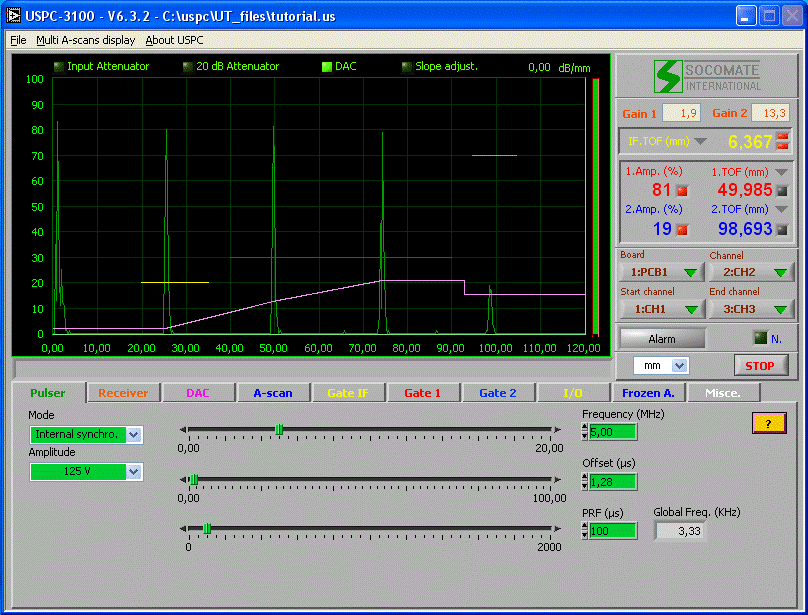

Help_tutorial_us.htm
25
September 2006
Introduction
The graphical interface software to set the USPC 3100 PCI card displays the here below window screen:

(Tutorial_picture1_us.gif)
This window screen has been shared in 7 main areas :
- title bar
- menu
- A-scan screen
- value & measurement area
- main functions bar
- setting utilities according to the function selected
- card, active channels and channel selection
- unit (us, mm, inch)
In the “title bar” is noticed the product name with version and the UT-file with path.
The menu file
gathers a list of options such as:
*File
-
open a UT-file,
-
save the UT settings in the
current file name,
-
save the UT settings under another
file name,
-
duplicate a channel,
-
print,
-
open one of the last 4 UT recent
files being used,
-
exit
the application program.
*Multi-Ascans display (only when severals
boards or MUX are used)
-
Display 2, 4 or 8 Ascans
-
Create/Modify Multi-Ascan setting files (*.scr)
*About
USPC displays the USPC system identification :
-
Software version, as well as DLL,
driver & setup files
-
Card serial number
-
Trigger mode
-
Resolution
The A-scan
screen
displays the UT signals with three gates, and, when requested, the DAC curve
and the rejection level.
The gain & measurement area displays the gain
1 & 2 values you can modify anytime, as well as in real time :
-
amplitude (%) and TOF/WT readout
in Gate 1 (Red)
-
amplitude (%) and TOF/WT readout
in Gate 2 (Blue)
-
ON/OFF alarms in Gate 1 & 2
(Red/green spots)
Remark:
When WT
process is running and output format is switched to 16 bits into pcxus.ini file
(FORMAT_WT_x=16 where x is gate name) you can select
TOF or WT by clicking on controls. In some others cases, only TOF measurement
is displaying.
|
(Tutorial_picture2_us.gif) |
Click here to select TOF or WT process |

Local/remote spot : Indicates whether the USPC software is running remotely (green) from an external API software, or not.
Active
DAC spot : Indicates
whether the DAC is active (green) or not.
Alarm
spot : Indicates
an outside boundary parameter setting (green), click on the spot to get alarms
diagnostic and reset Alarm.
N.
spot : Indicates
(notification) when a parameter setting is going to be modified through DLL
(green).
The main function bar allows to
select the main parameters to be modified.
The setting utilities allows
selecting:
-
in
continuous way between two limits by the mean of a cursor.
Cursor
type settings can be done by:
1.
keeping clicking on the cursor and
move the mouse left-right
2.
clicking directly in the cursor
moving area
3.
clicking in the value readout
area:
1.
double click and type the new
value with the key board
2.
one click and use the arrow keys
of the key board (up/down)
3.
one click between tenth and
hundredth and then use the arrows keys to modify the hundredth
4.
one
click between unit and tenth an then use the arrow keys to modify the tenth…
Card,
active channels and channel selection area to select
the PC card you want to work with (multi-channel mode) when using a MUX board
you can select the number of active channels and then the channel to setup.
[Summary]